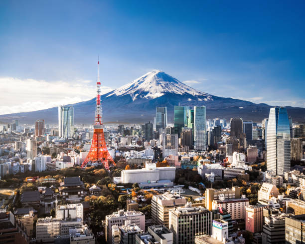

Mount Fuji este cel mai înalt vârf din Japonia și un simbol național. Regiunea Shimizu oferă vederi spectaculoase ale muntelui și activități legate de natură.
Top 10 Atracții din Mount Fuji (Shimizu):
- Vârful Mount Fuji
- Lacul Kawaguchi
- Parcul Național Fuji-Hakone-Izu
- Templul Fujisan Hongu Sengen Taisha
- Lacul Motosu
- Observatorul Shimizu
- Zona Gărilor Fuji
- Grădina Fuji Subaru Line 5th Station
- Muzeul Fuji
- Plaja Miho-no-Matsubara